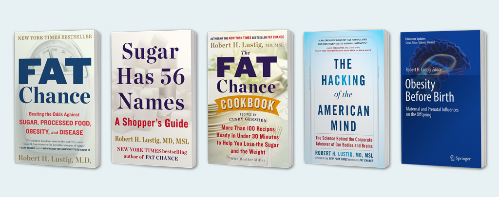

Books
-
(2010) Obesity Before Birth: Maternal and Prenatal Influences on the Offspring. Boston: Springer Science.
-
(2013) Fat Chance: Beating the Odds against Sugar, Processed Food, Obesity, and Disease. New York: Hudson Street Press.
-
(2013) Sugar Has 56 Names: A Shopper's Guide, Avery.
-
(2014) with Heather Millar, The Fat Chance Cookbook, Thorndike Press.
-
(2017) The Hacking of the American Mind, Avery. ISBN 978-1-101-98258-7
-
(2021) Metabolical: The Lure and Lies of Processed Food, Nutrition, and Modern Medicine. New York: Harper Wave. ISBN 978-0-06-302771-8